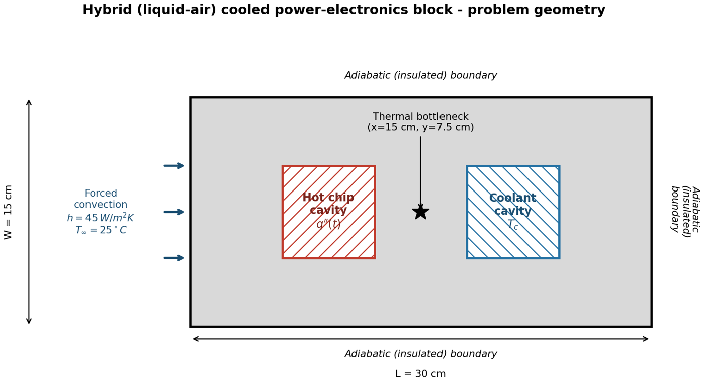
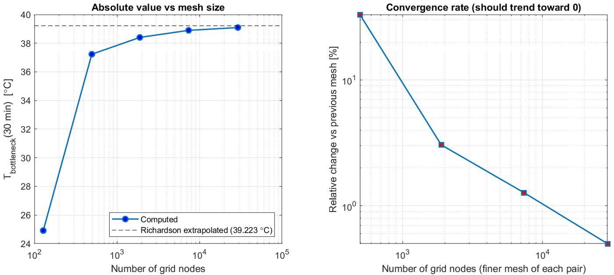
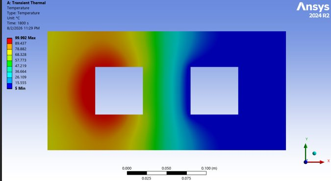

05Heat Transfer
Hybrid Cooling of Power Electronics
A transient finite-volume heat-conduction solver written from scratch in MATLAB, used to pass or fail a liquid–air cooled power-electronics block against its 75 °C limit.

Overview
Does the block, heated by a chip whose heat flux oscillates as q″(t) = 25 000 |sin(πt/300)| W/m² and cooled by a liquid channel and forced air, stay below 75 °C, and can the numerical answer be trusted?
Approach
- 30 × 15 cm alloy-steel block with a hot-chip cavity (oscillating heat flux) and a coolant cavity at fixed wall temperature.
- Conservative finite-volume discretization on a uniform grid; a mask matrix and face-type codes give one unified energy balance for every node type.
- Explicit (FTCS) solver with the stability limit evaluated over all nodes, cross-validated with an implicit (Backward-Euler) solver.
- Quasi-periodic steady state, a coolant-temperature study, grid and time-step independence, and validation with ANSYS Mechanical.
Results
| ANSYS Mechanical 2024 R2, bottleneck temperature | 0.22 °C difference (0.57 %) |
|---|---|
| Richardson extrapolation | apparent order p ≈ 1.34, GCI ≈ 0.41 % |
| Time-step independence (5–90 % of Δt_max) | 0.011 °C change |
| Explicit (FTCS) vs implicit (Backward Euler) | cross-validated |
| Peak bottleneck temperature, first 30 min | 39.3 °C: pass |
| Time to quasi-periodic state | 4.5 h (54 cycles of 300 s) |
| Oscillation amplitude in the periodic state | 3.55 °C, independent of T_c |
From the report





